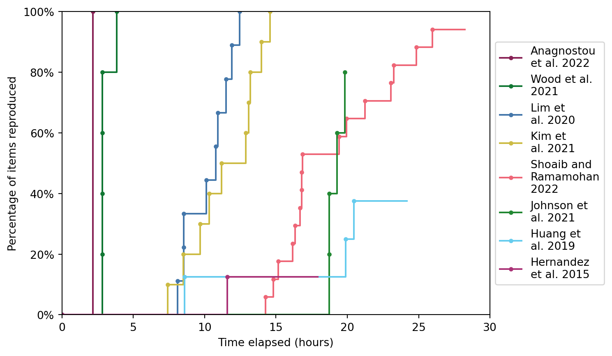

4 Reproduction
4.1 Studies
Shoaib and Ramamohan (2021): This is a discrete-event simulation modelling primary health centres (PHCs) in India. There are four patient types: outpatients, inpatients, childbirth cases and antenatal care patients. Four model configurations are developed based on observed PHC practices or government-mandated operational guidelines. The paper explores different operational patterns for scenarios where very high utilisation was observed, to explore what might help reduce utilisation of these resources. (Article published as Shoaib and Ramamohan (2022), but we used the green open access pre-print). Link to reproduction.
Huang et al. (2019): This is a discrete-event simulation model of an endovascular clot retrieval (ECR) service. ECR is a treatment for acute ischaemic stroke. The model includes the stroke pathway, as well as three other pathways that share resources with the stroke pathway: an elective non-stroke interventional neuroradiology pathway, an emergency interventional radiology pathway, and an elective interventional radiology pathway. The model is created using R Simmer. The paper explores waiting times and resource utilisation - particularly focussing on the biplane angiographic suite (angioINR). A few scenarios are tried to help examine why the wait times are so high for the angioINR. Link to reproduction.
Lim et al. (2020): This is a discrete-event simulation modelling the transmission of COVID-19 in laboratory. It examines the proportion of staff infected in scenarios varying the: number of shifts per day; number of staff per shift; overall staff pool; shift patterns; secondary attack rate of the virus; introduction of protective measures (social distancing and personal protective equipment). The model is created using Python. Link to reproduction.
Kim et al. (2021): This study adapts a previously developed discrete-event simulation model for abdominal aortic aneurysm (AAA) screening of men in England. It aims to explore different approaches to resuming screening and surgical repair for AAA, as these survives were paused or substantially reduced during COVID-19 due to concerns about virus transmission. Link to reproduction.
Anagnostou et al. (2022): This paper includes two models - we have focussed just on the dynamiC Hospital wARd Management (CHARM) model. CHARM is a discrete-event simulation modelling intensive care units (ICU) in the COVID-19 pandemic (as well as subsequent stays in a recovery bed). It includes three types of admission to the ICU (emergency, elective or COVID-19). COVID-19 patients are kept seperate, and if they run out of capacity due to a surge in COVID-19 admissions, additional capacity can be pooled from the elective and emergency capacity. Link to reproduction.
Johnson et al. (2021): TBC
4.2 Scope
| Study | Scope | Success | Time |
|---|---|---|---|
| Shoaib and Ramamohan 2022 | 17 items: • 1 table • 9 figures • 7 in-text results |
16 out of 17 (94%) | 28h 14m |
| Huang et al. 2019 | 8 items: • 5 figures • 3 in-text results |
3 out of 8 (37.5%) | 24h 10m |
| Lim et al. 2020 | 9 items: • 5 tables • 4 figures |
9 out of 9 (100%) | 12h 27m |
| Kim et al. 2021 | 10 items: • 3 tables • 6 figures • 1 in-text result |
10 out of 10 (100%) | 13h 59m |
| Anagnostou et al. 2022 | 1 item: • 1 figure |
1 out of 1 (100%) | 2h 10m |
| Johnson et al. 2021 | 5 items: • 1 table • 4 figures |
TBC | TBC |
4.3 Time to completion
Non-interactive figure:
Interactive figure:
4.4 References
Anagnostou, Anastasia, Derek Groen, Simon J. E. Taylor, Diana Suleimenova, Nura Abubakar, Arindam Saha, Kate Mintram, et al. 2022. “FACS-CHARM: A Hybrid Agent-Based and Discrete-Event Simulation Approach for Covid-19 Management at Regional Level.” In 2022 Winter Simulation Conference (WSC), 1223–34. https://doi.org/10.1109/WSC57314.2022.10015462.
Huang, Shiwei, Julian Maingard, Hong Kuan Kok, Christen D. Barras, Vincent Thijs, Ronil V. Chandra, Duncan Mark Brooks, and Hamed Asadi. 2019. “Optimizing Resources for Endovascular Clot Retrieval for Acute Ischemic Stroke, a Discrete Event Simulation.” Frontiers in Neurology 10 (June). https://doi.org/10.3389/fneur.2019.00653.
Johnson, Kate M., Mohsen Sadatsafavi, Amin Adibi, Larry Lynd, Mark Harrison, Hamid Tavakoli, Don D. Sin, and Stirling Bryan. 2021. “Cost Effectiveness of Case Detection Strategies for the Early Detection of COPD.” Applied Health Economics and Health Policy 19 (2): 203–15. https://doi.org/10.1007/s40258-020-00616-2.
Kim, Lois G., Michael J. Sweeting, Morag Armer, Jo Jacomelli, Akhtar Nasim, and Seamus C. Harrison. 2021. “Modelling the Impact of Changes to Abdominal Aortic Aneurysm Screening and Treatment Services in England During the COVID-19 Pandemic.” PLOS ONE 16 (6): e0253327. https://doi.org/10.1371/journal.pone.0253327.
Lim, Chun Yee, Mary Kathryn Bohn, Giuseppe Lippi, Maurizio Ferrari, Tze Ping Loh, Kwok-Yung Yuen, Khosrow Adeli, and Andrea Rita Horvath. 2020. “Staff Rostering, Split Team Arrangement, Social Distancing (Physical Distancing) and Use of Personal Protective Equipment to Minimize Risk of Workplace Transmission During the COVID-19 Pandemic: A Simulation Study.” Clinical Biochemistry 86 (December): 15–22. https://doi.org/10.1016/j.clinbiochem.2020.09.003.
Shoaib, Mohd, and Varun Ramamohan. 2021. “Simulation Modelling and Analysis of Primary Health Centre Operations.” arXiv, June. https://doi.org/10.48550/arXiv.2104.12492.
———. 2022. “Simulation Modeling and Analysis of Primary Health Center Operations.” SIMULATION 98 (3): 183–208. https://doi.org/10.1177/00375497211030931.